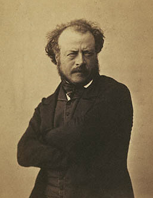
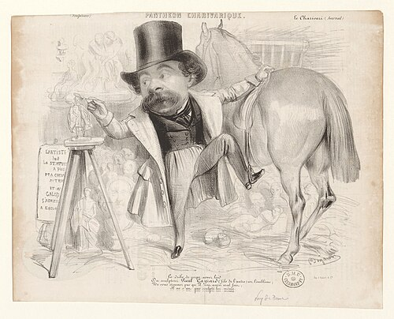
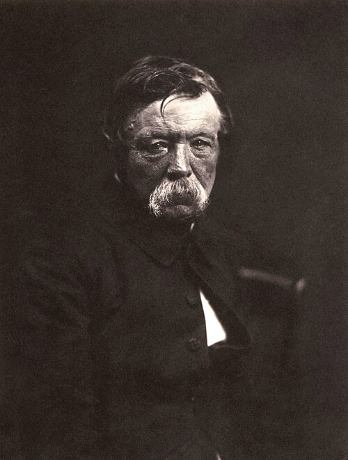
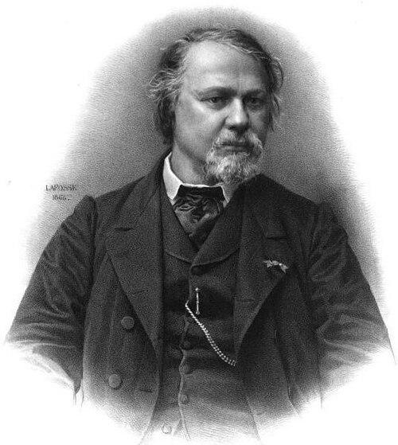
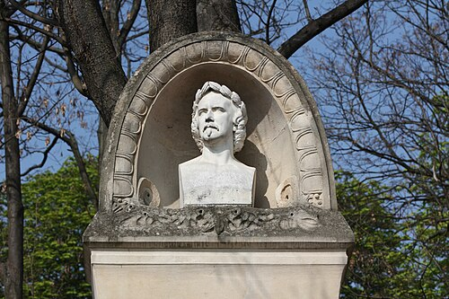

Salon of 1846
Why Sculpture Is Tiresome
Pourquoi la sculpture est ennuyeuse
L’origine de la sculpture se perd dans la nuit des temps ; c’est donc un art de Caraïbes.
The origin of sculpture is lost in the night of time; it is therefore an art of Caribs.
En effet, nous voyons tous les peuples tailler fort adroitement des fétiches longtemps avant d’aborder la peinture, qui est un art de raisonnement profond et dont la jouissance même demande une initiation particulière.
Indeed, we see every people very skillfully carving fetishes long before approaching painting, which is an art of profound reasoning and whose enjoyment itself demands a special initiation.
La sculpture se rapproche bien plus de la nature, et c’est pourquoi nos paysans eux-mêmes, que réjouit la vue d’un morceau de bois ou de pierre industrieusement tourné, restent stupides à l’aspect de la plus belle peinture. Il y a là un mystère singulier qui ne se touche pas avec les doigts.
Sculpture is much closer to nature, and that is why even our peasants, delighted by the sight of a piece of wood or stone skillfully turned, remain stupid before the most beautiful painting. There is a singular mystery here that cannot be touched with the fingers.
La sculpture a plusieurs inconvénients qui sont la conséquence nécessaire de ses moyens. Brutale et positive comme la nature, elle est en même temps vague et insaisissable, parce qu’elle montre trop de faces à la fois. C’est en vain que le sculpteur s’efforce de se mettre à un point de vue unique ; le spectateur, qui tourne autour de la figure, peut choisir cent points de vue différents, excepté le bon, et il arrive souvent, ce qui est humiliant pour l’artiste, qu’un hasard de lumière, un effet de lampe, découvrent une beauté qui n’est pas celle à laquelle il avait songé. Un tableau n’est que ce qu’il veut ; il n’y a pas moyen de le regarder autrement que dans son jour. La peinture n’a qu’un point de vue ; elle est exclusive et despotique : aussi l’expression du peintre est-elle bien plus forte.
Sculpture has several disadvantages that are the necessary consequence of its means. Brutal and positive like nature, it is at the same time vague and elusive because it shows too many faces at once. The sculptor strives in vain to place himself at a single point of view; the spectator, who walks around the figure, can choose a hundred different viewpoints except the right one, and it often happens—to the artist’s humiliation—that an accident of light, a lamplight effect, reveals a beauty other than the one he intended. A picture is only what it wishes to be; there is no way to look at it except in its own light. Painting has only one point of view; it is exclusive and despotic, and therefore the painter’s expression is much stronger.

C’est pourquoi il est aussi difficile de se connaître en sculpture que d’en faire de mauvaise. J’ai entendu dire au sculpteur Préault . « Je me connais en Michel-Ange, en Jean Goujon, en Germain Pilon ; mais en sculpture je ne m’y connais pas. » — Il est évident qu’il voulait parler de la sculpture des sculptiers, autrement dite des Caraïbes.
That is why it is as difficult to understand sculpture as it is to make bad sculpture. I have heard the sculptor Préault say: ‘I understand Michelangelo, Jean Goujon, Germain Pilon; but sculpture I do not understand.’ Evidently he meant the sculpture of sculptors—in other words, of Caribs.
Sortie de l’époque sauvage, la sculpture, dans son plus magnifique développement, n’est autre chose qu’un art complémentaire. Il ne s’agit plus de tailler industrieusement des figures portatives, mais de s’associer humblement à la peinture et à l’architecture, et de servir leurs intentions. Les cathédrales montent vers le ciel, et comblent les mille profondeurs de leurs abîmes avec des sculptures qui ne font qu’une chair et qu’un corps avec le monument ; — sculptures peintes, — notez bien ceci, — et dont les couleurs pures et simples, mais disposées dans une gamme particulière, s’harmonisent avec le reste et complètent l’effet poétique de la grande œuvre. Versailles abrite son peuple de statues sous des ombrages qui leur servent de fond, ou sous des bosquets d’eaux vives qui déversent sur elles les mille diamants de la lumière. À toutes les grandes époques, la sculpture est un complément ; au commencement et à la fin, c’est un art isolé.
Once beyond the savage period, sculpture in its most magnificent development is nothing other than a complementary art. It is no longer a matter of skillfully carving portable figures, but of humbly associating itself with painting and architecture and serving their intentions. Cathedrals rise toward the sky and fill the thousand depths of their abysses with sculptures that make one flesh and one body with the monument—painted sculptures, note this carefully—whose pure and simple colors, arranged in a particular scale, harmonize with the rest and complete the poetic effect of the great work. Versailles shelters its population of statues beneath foliage that serves as a background, or amid groves of living water that pour over them the thousand diamonds of light. In every great age sculpture is a complement; at the beginning and at the end it is an isolated art.


Sitôt que la sculpture consent à être vue de près, il n’est pas de minuties et de puérilités que n’ose le sculpteur, et qui dépassent victorieusement tous les calumets et les fétiches. Quand elle est devenue un art de salon ou de chambre à coucher, on voit apparaître les Caraïbes de la dentelle, comme M. Gayrard , et les Caraïbes de la ride, du poil et de la verrue, comme M. David .
As soon as sculpture consents to be seen close up, there is no minuteness or childishness the sculptor will not dare, triumphantly exceeding every pipe and fetish. Once it becomes an art of the Salon or the bedroom, there appear the Caribs of lace, like M. Gayrard, and the Caribs of wrinkles, hair, and warts, like M. David.



Puis les Caraïbes du chenet, de la pendule, de l’écritoire, etc., comme M. Cumberworth , dont la Marie est une femme à tout faire, au Louvre et chez Susse, statue ou candélabre ; — comme M. Feuchère qui possède le don d’une universalité désespérante : figures colossales, porte-allumettes, motifs d’orfévrerie, bustes et bas-reliefs, il est capable de tout. — Le buste qu’il a fait cette année d’après un comédien fort connu n’est pas plus ressemblant que celui de l’an passé ; ce ne sont jamais que des à peu près. Celui-là ressemblait à Jésus-Christ, et celui-ci, sec et mesquin, ne rend pas du tout la physionomie originale, anguleuse, moqueuse et flottante du modèle. — Du reste, il ne faut pas croire que ces gens-là manquent de science. Ils sont érudits comme des vaudevillistes et des académiciens ; ils mettent à contribution toutes les époques et tous les genres ; ils ont approfondi toutes les écoles. Ils transformeraient volontiers les tombeaux de Saint-Denis en boîtes à cigares ou à cachemires, et tous les bronzes florentins en pièces de deux sous. Pour avoir de plus amples renseignements sur les principes de cette école folâtre et papillonnante, il faudrait s’adresser à M. Klagmann , qui est, je crois, le maître de cet immense atelier.
Then come the Caribs of fire-dogs, clocks, inkstands, and so forth, like M. Cumberworth, whose Marie is a maid-of-all-work, at the Louvre and at Susse’s, statue or candelabrum; like M. Feuchère, who possesses the gift of a despairing universality: colossal figures, match-holders, goldsmith’s designs, busts, and bas-reliefs—he is capable of everything. The bust he made this year after a very well-known actor is no more lifelike than last year’s; they are never more than approximations. That one resembled Jesus Christ, while this one, dry and mean, does not render at all the model’s original, angular, mocking, and shifting physiognomy. Still, one must not suppose these people lack learning. They are erudite like vaudevillists and academicians; they levy contributions on every age and every genre; they have studied every school. They would gladly turn the tombs of Saint-Denis into cigar or shawl boxes and all the Florentine bronzes into two-sou trinkets. For fuller information on the principles of this fluttering, butterfly school one should address M. Klagmann, who is, I believe, the master of this immense workshop.

Ce qui prouve bien l’état pitoyable de la sculpture, c’est que M. Pradier en est le roi. Au moins celui-ci sait faire de la chair, et il a des délicatesses particulières de ciseau ; mais il ne possède ni l’imagination nécessaire aux grandes compositions, ni l’imagination du dessin. C’est un talent froid et académique. Il a passé sa vie à engraisser quelques torses antiques, et à ajuster sur leurs cous des coiffures de filles entretenues. La Poésie légère paraît d’autant plus froide qu’elle est plus maniérée ; l’exécution n’en est pas aussi grasse que dans les anciennes œuvres de M. Pradier, et, vue de dos, l’aspect en est affreux. Il a de plus fait deux figures de bronze, — Anacréon et la Sagesse, — qui sont des imitations impudentes de l’antique, et qui prouvent bien que sans cette noble béquille M. Pradier chancellerait à chaque pas.
What proves the pitiful state of sculpture is that M. Pradier is its king. At least he knows how to make flesh, and he has particular delicacies of the chisel; but he possesses neither the imagination required for great compositions nor the imagination of drawing. His is a cold, academic talent. He has spent his life fattening a few antique torsos and fitting onto their necks the coiffures of kept women. Light Poetry seems all the colder for being more mannered; its execution is not as rich as in M. Pradier’s earlier works, and from the back its appearance is dreadful. He has also made two bronze figures—Anacreon and Wisdom—which are shameless imitations of the antique and prove very well that without that noble crutch M. Pradier would stagger at every step.

Le buste est un genre qui demande moins d’imagination et des facultés moins hautes que la grande sculpture, mais non moins délicates. C’est un art plus intime et plus resserré dont les succès sont moins publics. Il faut, comme dans le portrait fait à la manière des naturalistes, parfaitement bien comprendre le caractère principal du modèle et en exprimer la poésie ; car il est peu de modèles complètement dénués de poésie. Presque tous les bustes de M. Dantan sont faits selon les meilleures doctrines. Ils ont tous un cachet particulier, et le détail n’en exclut pas une exécution large et facile.
The bust is a genre that demands less imagination and less elevated faculties than great sculpture, but faculties no less delicate. It is a more intimate and restricted art whose successes are less public. As in portraiture practiced by naturalists, one must understand perfectly the model’s principal character and express its poetry, for few models are wholly without poetry. Almost all M. Dantan’s busts are made according to the best doctrines. They each bear a particular stamp, and detail does not exclude broad and easy execution.

Le défaut principal de M. Lenglet , au contraire, est une certaine timidité, puérilité, sincérité excessive dans le travail, qui donne à son œuvre une apparence de sécheresse ; mais, en revanche, il est impossible de donner un caractère plus vrai et plus authentique à une figure humaine. Ce petit buste, ramassé, sérieux et froncé, a le magnifique caractère des bonnes œuvres romaines, qui est l’idéalisation trouvée dans la nature elle-même. Je remarque, en outre, dans le buste de M. Lenglet un autre signe particulier aux figures antiques, qui est une attention profonde.
M. Lenglet’s principal defect, by contrast, is a certain timidity, childishness, and excessive conscientiousness in the work that gives it an appearance of dryness; but in return it would be impossible to give a human face a truer and more authentic character. This little bust, compact, serious, and frowning, has the magnificent character of good Roman works: idealization found in nature itself. I also notice in M. Lenglet’s bust another trait peculiar to antique figures—a profound attention.